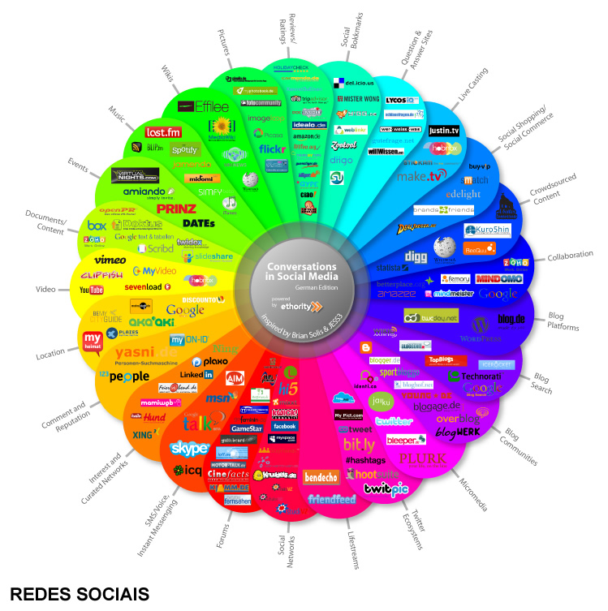

Vantagens
Em nível profissional temos:
- divulgação facilitada de currículos (ao disseminar mais as competências de um indivíduo, há com freqüência quem os valorize);
- referências pessoais são acessadas com facilidade;
- gama abundante de empregos (mostrada através da proximidade geográfica, ou posicionamento virtual);
- chances maiores de se encontrar antigos amigos e colegas;
- grande probabilidade se conseguir propostas de negócios (em virtude da disponibilidade, facilidade ou elementos curriculares);
- oportunidades para se aderir melhor a dados biográficos de pessoas para que se possam selecionar bons especialistas.
- Estas foram as vantagens mais visíveis no campo profissional.
Em nível pessoal temos algumas que se focam em:
- comunicação e interação entre várias pessoas independendo da distância geográfica;
- facilidade em reencontrar velho amigos e manter contato entre os mesmos;
- além da possibilidade de conhecerem-se novas pessoas construindo novas amizades.
|  |
Clique sobre a imagem ao lado para ampliar o esquema de divisão das Redes Sociais com suas devidas funcionalidades. É interessante observar o seu desmembramento. |
|